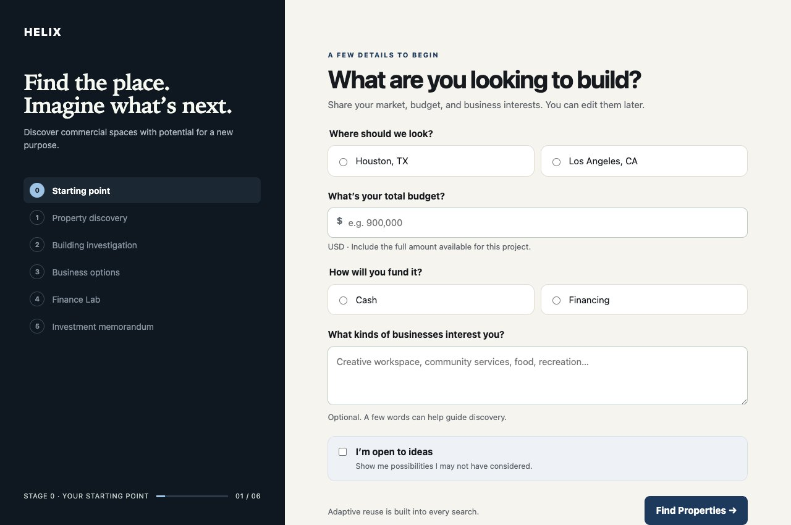
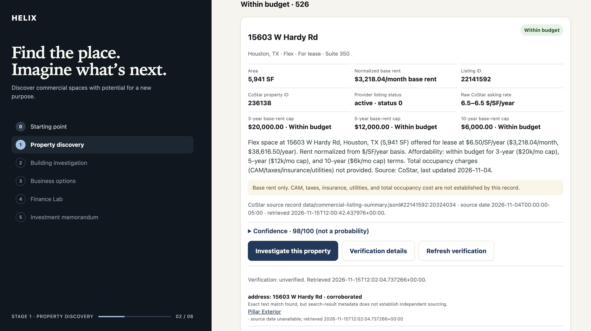

Helix · HackPrinceton 2026
What could this building become?
Over one HackPrinceton weekend, our team of three built a commercial real estate intelligence system that combines spatial evidence, AI-assisted analysis, rules-based screening, and financial modeling.
My role. I proposed the adaptive reuse idea and built across the investigation workflow, from property discovery and spatial evidence to screening, opportunity reporting, and Finance Lab.
- Event
- HackPrinceton 2026
- Team
- Three people
- Timeline
- One hackathon weekend
Technology across the investigation
- Application
- Python HTTP server · JavaScript, HTML and CSS
- Model inference
- OpenRouter · NVIDIA Nemotron for discovery and tool execution · Qwen for vision · GPT-6.1 Sol for opportunity reports
- Property and spatial evidence
- CoStar, Vexcel and Matterport
- Research and compliance
- Tavily and Census geocoding
- Finance
- Python cash simulation and Capital One Nessie sandbox

01 / The idea
A building can outlive its first use.
I was struck by how much New York nightlife happens in buildings made for something else. A warehouse becomes a rave venue. News about vacant offices and conversions raised the same question at a much larger scale. I wanted to start with a building and investigate which uses could work there. That reverses the usual search: once you commit to a business idea, the listings you compare can only tell you where that idea might fit. Starting with the space lets you compare different businesses against the same physical and financial constraints.
A promising listing and a manageable rent only get you so far. An operator still needs to know whether the ceiling clears the equipment, whether vehicles can get in, what the use requires locally, and how long the business can carry costs before opening. Each answer comes from a different kind of evidence. At HackPrinceton, we built one investigation that could carry those answers forward together.
02 / The saved investigation
One building. 26 possible uses.
1250 S Broadway, Los Angeles. We followed a 7,205-square-foot industrial listing from discovery through a modeled investment decision.
Product walkthrough · Houston
Inside a Helix investigation.
Follow a veterinary clinic scenario at 15603 W Hardy Road, a separate investigation from South Broadway.

03 / Building intelligence
Each source answers a different question.
CoStar tells us what is being offered. Vexcel’s overhead and oblique views give context for the footprint, approaches, and exterior. Matterport brings the investigation inside, where scan coverage and available measurements can inform the next inspection. Vision models can point to visible features and tie an observation back to an image.
The difficult part is deciding where that evidence applies. A scan can match the address while its relationship to the advertised suite remains unclear. A building-level height field leaves the suite’s usable clearance open. Helix carries those scope differences forward so an operator knows what to measure next.
04 / Engineering judgment
Give the model evidence.
Give the decision rules.
I built the discovery and investigation handoff around an exact property, listing, and suite. Two sources can agree on the street address and still describe different spaces. Carrying those identifiers through the workflow let us test that connection before using the evidence.
I integrated the team’s screening engine behind the investigation, with an adapter that checks the selected listing and suite before evaluation. Explicit building, cost, and compliance rules determine which uses advance. I built the opportunity report backend around that output, validating candidate order and evidence references so AI explanations stay tied to the screening.
The investigation records provider status, conflicting observations, and unresolved questions alongside evidence that did arrive. Saved discovery, dossier, and screening snapshots let us revisit the decision after sponsor access ended. On Broadway, restoring a missing jurisdiction cache changed which uses advanced. The preserved runs show where that input affected the result.
05 / Finance Lab
What does it take to open?
Auto repair was selected from the Broadway shortlist. The saved base case estimated $530,432 to open against a $900,000 budget. Its assumptions included a zero-dollar reserve and a twelve-month no-revenue cash view. These are modeled inputs and outputs from the saved investigation.
$530,432 modeled opening capital · $369,568 modeled headroom
Finance Lab brings lease terms, build-out, upfront capital, recurring expenses, opening delay, and proposed financing into the same model. Low, base, and high scenarios let an operator see which assumptions move the decision. The memorandum keeps the estimated capital alongside the due diligence questions, including clear height, permitted use, and the current certificate of occupancy.

06 / Building at HackPrinceton
From a property browser to a decision workflow.
- Start with a place. We started with a Houston address browser and the Tanner Road pilot. Testing one actual property exposed the difference between finding a listing and knowing what the building could support.
- Put economics next to fit. The physical checks and financial models answered different questions. We brought them together so that an attractive use could still be screened out by rent, build-out costs, or cash runway.
- Connect the tools. The venture workstation supported starting from a budget, business, or building. The scrolling story view showed us how much easier a verdict was to follow when visitors saw the evidence in the order it mattered.
- Follow one space all the way through. For the judging demo, we narrowed the workflow to one exact space. That gave the pieces a shared point of reference and made the transition from investigation to business selection and capital planning clear.
My contribution
I brought the adaptive reuse idea to the project and built the intake and discovery experience end to end, including listing normalization, stable suite identities, and the verification handoff. I implemented the building investigation orchestrator, evidence contracts, spatial provider adapters, and the interface that displays findings as the investigation progresses. That work included integrating the team’s compliance logic, refining the physical profile, and getting Matterport tours to load in the investigation view.
I integrated the team’s deterministic screening engine and built the screening UI and opportunity report backend. I also built the Finance Lab adapter and initial interface around the team’s cost and cash models, and fixed multi-step Nemotron tool execution so a turn could finish after several tool calls. My work spanned the browser, data contracts, model calls, and the handoffs that let independently built components operate as one system. We showed the integrated application at judging.
07 / What we kept
A working investment workflow in one weekend.
We preserved six investigation records, including an alternate candidate. Broadway has the saved chain through Finance Lab and the memorandum. A recorded integration check across Helix and the earlier playground had 411 passing Python tests and 10 skips. Those checks exercised software behavior against their inputs.
A production system would need dependable data access, better scan-to-suite coverage, and validation with operators across markets. In one weekend, we took an observation about New York nightlife and built a system that could investigate a commercial space, screen 26 uses, model the capital to open, and assemble an evidence-backed memorandum. Each claim in that decision could lead an operator back to a record, an assumption, or a specific question to resolve on site.
Engineering archive ↗
Complete technical history, implementation record, and preserved investigations.